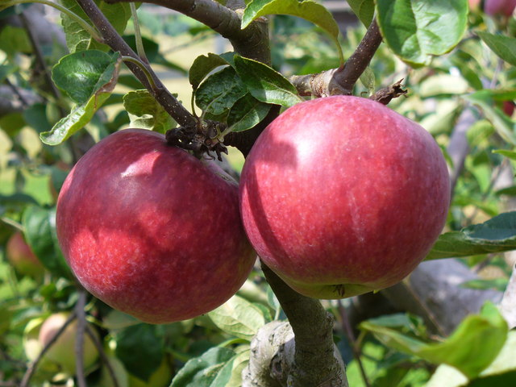

Manzano |
|
|
|
|
| Taxonomia | |
| Reino: | Plantae |
| Division: | Magnoliophyta |
| Clase: | Magnoliopsida |
| Subclase: | Rosidae |
| Orden: | Rosales |
| Familia: | Rosaceae |
| Subfamilia: | Amygdaloideae |
| Género: | Malus |
| Especie: | Malus domestica |
| Wikipedia. La enciclopedia libre | |
Manzanas, crudas, sin piel |
|
|  | |
| Valor nutricional por cada 100 gr | |
| Energía 50 kcal 210 kJ | |
| Carbohidratos: | 12.76 gr |
|
10.10 gr |
| Fibra alimentaria: | 1.3 gr |
| Grasas: | 0.13 gr |
| Proteinas: | 0.27 gr |
| Agua: | 86.67 gr |
| Retinol (vit. A): | 2 µgr (0%) |
| Tiamina (vit. B1): | 0.028 mgr (2%) |
| Riboflavina (vit. B2): | 0.091 mgr (1%) |
| Niacina (vit. B3 ): | 0.037 mgr (3%) |
| Vitamina B6: | 4.0 mgr (7%) |
| Vitamina C: | 5 mgr (1%) |
| Calcio: | Malus domestica |
| Wikipedia. La enciclopedia libre | |
Usos
Es un árbol muy extendido por su uso ornamental y por sus frutos. Su madera dura y con ligero brillo es utilizada en la artesania.
Medicinales
Los azúcares de la manzana se asimilan facilmente, lo cual es un inconveniente para las personas diabéticas. En este caso se recomienda comer la manzana con piel, puesto que esta contiene la mayor parte de la pectina (fibra dietética soluble), que ayuda a retrasar la absorción de estos azúcares.
La manzana cruda actúa como un excelente dentifrico por dos razones; por un lado ayuda a limpiar los dientes; por otro, la forma de ingerirla permite la liberación de restos alimenticios en las encias. La decocción de manzanas se emplea como calmante suave en caso de insomnio ligero
La sidra ejerce un efecto discretamente diurético, por lo que se recomienda como tratamiento complementario del edema.
Principios activos
La corteza contiene un glucosido amargo, la floriatzina, que llega a constituir el 5% del peso de la corteza.
El fruto contiene un 80% de agua, un 15% de carbohidratos y un 5% escaso de proteinas. Es rico en pectina, vitaminas, ácido malico, ácido tartárico y ácido galico, asi como en sodio, potasio, magnesio y hierro. Gran parte de las vitaminas y minerales se localizan en la piel o justo debajo de esta, por lo que para obtener todos sas principios alimenticios deben consumirse sin pelar.
Más información: Wikipedia